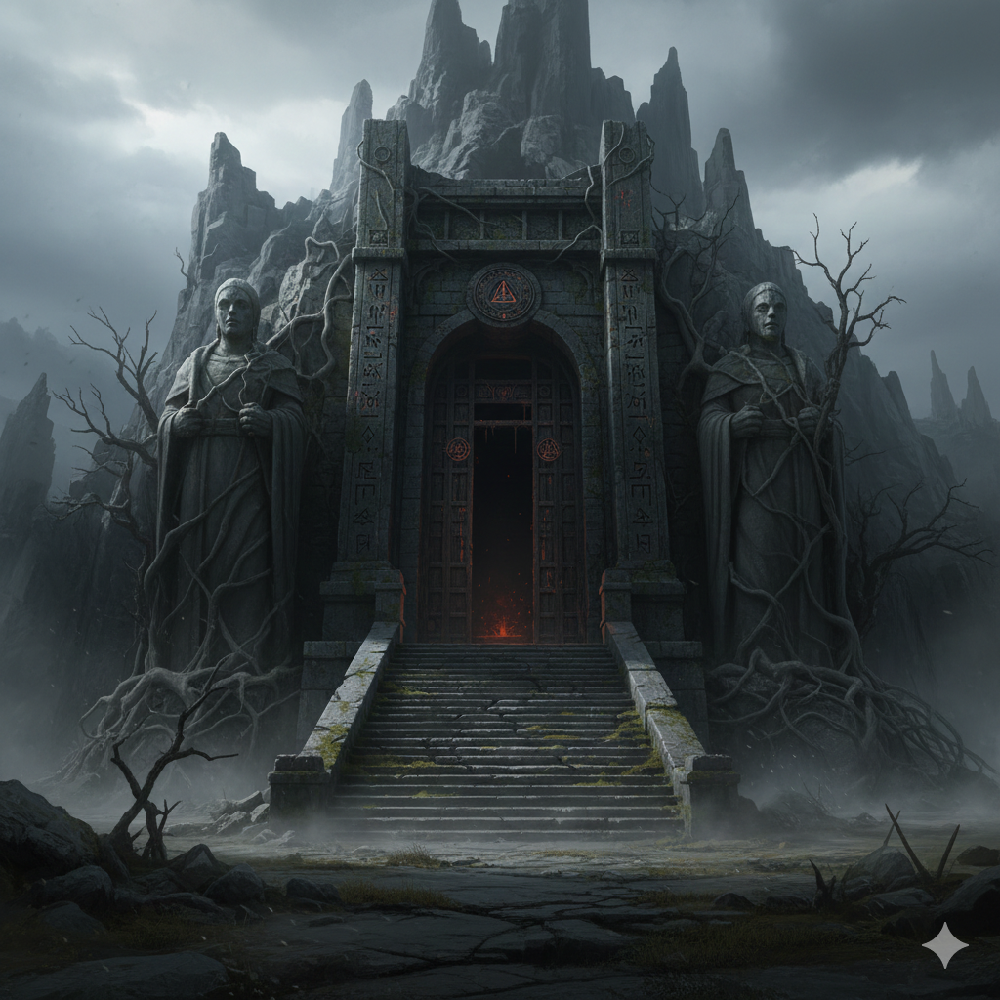
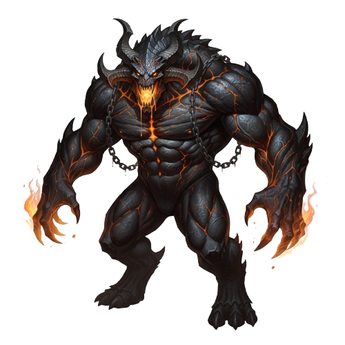

1. Entrada y Pasillos
Inicias en la entrada y avanzas por pasillos de conexion que te abren rutas a tienda, salas de combate y zonas de ritual oscuro.
Esta guia resume como se vive la aventura: movimiento por salas, encuentros aleatorios, busqueda de oro y progresion hacia el Trono Impio.

Inicias en la entrada y avanzas por pasillos de conexion que te abren rutas a tienda, salas de combate y zonas de ritual oscuro.

Cada sala puede activar encuentros. Algunas son trampas visuales: parecen bellas o tranquilas, pero esconden criaturas de alto riesgo.

Tu personaje mantiene salud, ataque, defensa y oro. Buscar bien y elegir el camino correcto marca la diferencia antes del jefe final.

El recorrido termina en la Sala del Trono Impio. El combate final puede aparecer con baja probabilidad, haciendo ese momento mas intenso.
En la tienda puedes comprar objetos que mejoran tus stats o te dan ventajas en combate. El oro se consigue al derrotar enemigos o encontrar tesoros. Elige sabiamente tus compras para maximizar tu supervivencia.
El oro es esencial para comprar objetos y mejorar tus habilidades. Asegúrate de gestionarlo cuidadosamente para no quedarte sin recursos en momentos críticos.